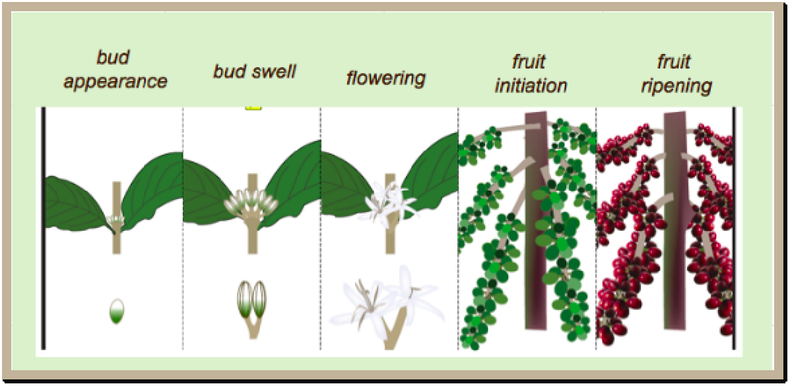

Coffee
Types of Coffee:
Arabica Coffee (Coffea arabica):
Also Known As: Arabica.
Description: Arabica coffee beans are known for their smooth, mild flavor
and aromatic qualities. They are typically grown at higher altitudes.
Uses: Widely used in specialty coffee blends and single-origin coffees.
Growth Conditions: Prefers cooler temperatures between 15°C to 24°C and
requires well-drained, fertile soil.
Varieties: Includes numerous cultivars, such as Typica and Bourbon, each
with unique flavor profiles.
Robusta Coffee (Coffea canephora):
Also Known As: Robusta.
Description: Robusta coffee beans are stronger and more bitter than
Arabica, with a higher caffeine content.
Uses: Commonly used in espresso blends and instant coffee.
Growth Conditions: Thrives in warmer climates (20°C to 30°C) and can grow
at lower altitudes.
Characteristics: Known for its disease resistance and higher yield compared
to Arabica.
Liberica Coffee (Coffea liberica):
Also Known As: Liberica.
Description: Liberica coffee has a unique, fruity flavor and a floral
aroma, with larger beans and an irregular shape.
Uses: Less common than Arabica and Robusta, often used in blends for unique
flavor profiles.
Growth Conditions: Grows well in tropical climates and can tolerate poor
soil conditions.
Flavor Profile: Known for its bold and complex flavors, often described as
woody or smoky.
Growing Conditions
Climate:
Temperature:
Germination Stage: Coffee seeds require a soil temperature of around 24°C
to 30°C for optimal germination. Low temperatures below 15°C can delay germination.
Vegetative Growth Stage: During the vegetative phase, coffee plants prefer
temperatures between 18°C and 24°C. This range supports optimal leaf development and growth.
Reproductive Stage: As coffee plants transition to flowering and fruiting,
temperatures between 20°C and 25°C are favorable. Excessive heat above 30°C can negatively
impact flower and fruit set.
Harvest Stage: Cool and dry conditions are ideal during harvest to ensure
the coffee cherries are ripe and reduce spoilage.
Rainfall and Moisture:
Moderate Rainfall: Coffee requires moderate rainfall, generally between
1,200mm to 2,500mm per growing season. Timely rainfall is essential during flowering and
fruit development.
Irrigation: In regions with insufficient rainfall, irrigation is crucial to
maintain adequate soil moisture, especially during critical periods like flowering and fruit
filling. Over-irrigation should be avoided to prevent waterlogging and root diseases.
Drought Resistance: Some coffee varieties are bred for drought resistance
and can tolerate dry conditions better, making them suitable for regions with variable
rainfall.
Sunlight:
Coffee plants require partial shade, ideally receiving 4 to 6 hours of direct sunlight daily.
Adequate sunlight is essential for photosynthesis, which drives plant growth and fruit
development.
Excessive sunlight can lead to leaf burn and reduced yield.
Humidity:
Coffee prefers moderate humidity levels, ideally between 60% to 80%. High humidity can create
conditions favorable for fungal diseases, which can significantly impact yield and quality.
Proper field management practices, such as maintaining adequate spacing between plants
and timely application of fungicides, can help manage disease pressure in high-humidity
conditions.
Wind:
Mild winds can aid in pollination by helping to distribute pollen. However, strong winds can
damage coffee plants and cause fruit drop.
Windbreaks or shelterbelts can be used to
protect coffee fields from strong winds, helping to maintain plant stability and health.
Soil:
Soil Type:
Loamy Soil: Coffee thrives best in loamy soils, which provide good
drainage while retaining enough moisture for optimal growth.
Volcanic Soil: Volcanic soils are particularly favorable for coffee
cultivation due to their high mineral content and good drainage.
Sandy Soil: Sandy soils can also be suitable for coffee, provided they
are well-drained. These soils allow for good root penetration but may require additional
organic matter to improve nutrient content.
Soil Structure:
Well-Drained: Coffee requires well-drained soil to prevent
waterlogging, which can lead to root rot and other diseases.
Good Aeration: Proper soil aeration is essential for root respiration
and overall plant health. Well-aerated soils support vigorous root growth and nutrient
uptake.
Soil Fertility:
Nutrient-Rich: Coffee grows best in fertile soils with adequate levels
of essential nutrients such as nitrogen (N), phosphorus (P), potassium (K), and
micronutrients (e.g., zinc, iron, copper).
Organic Matter: The presence of organic matter in the soil enhances
soil fertility by providing nutrients and improving soil structure. Organic matter also
supports beneficial soil microorganisms.

Soil pH:
Optimal pH Range: Coffee prefers a slightly acidic soil pH, typically
between 6.0 and 6.5. Soils outside this pH range may require amendments to adjust the pH
to an optimal level.
pH Management: Lime can be added to acidic soils to raise the pH, while
sulfur or organic matter can be used to lower the pH of alkaline soils.
Soil Preparation:
Plowing and Tilling: Proper soil preparation involves plowing and
tilling to create a fine seedbed, improving soil structure, eliminating weeds, and
incorporating organic matter or fertilizers.
Leveling: Leveling the field ensures uniform irrigation and prevents
waterlogging in low-lying areas, facilitating efficient planting and crop management.
Soil Conservation:
Erosion Control: Practices such as contour plowing, terracing, and
maintaining ground cover help prevent soil erosion, which can deplete soil fertility and
structure.
```html
Crop Rotation: Rotating coffee with other crops, such as legumes, can
improve soil health by reducing the buildup of pests and diseases and enhancing soil
nutrient levels through nitrogen fixation.
Water Requirements:
General Water Needs:
Coffee requires approximately 1,200-2,500 millimeters (mm) of water throughout its growing season, depending on the variety, climate, and soil conditions.
Critical Growth Stages:
Germination: Adequate soil moisture is necessary for seed germination
and seedling establishment.
Vegetative Stage: Water is crucial during the vegetative stage to
promote leaf and stem development.
Flowering: Adequate moisture at the flowering stage ensures proper
flower and fruit development.
Fruit Filling: Irrigation during the fruit filling stage is vital for
achieving good fruit size and quality.
Harvest Stage: Reducing irrigation towards the end of the growing
season allows the soil to dry, facilitating harvesting and preventing lodging.
Drought and Stress Management:
Drought-Resistant Varieties: Plant drought-resistant coffee varieties in
regions prone to water scarcity. These varieties are bred to withstand periods of water
stress.
Deficit Irrigation: Implement strategies where water is applied during
the most critical growth stages to manage water resources during drought conditions.
Planting and Seeding:
Planting:
Coffee can be sown either by broadcasting seeds or by using seed drills for more uniform planting. They are typically sown in the spring after the last frost date.
Seeding Rates:
The seeding rate varies but generally ranges from 2 to 4 kg per hectare, depending on the variety and planting method.
Nutritional Value:
Carbohydrates:
Coffee is a rich source of carbohydrates, providing energy.
Fiber:
Coffee is high in dietary fiber, promoting digestive health.
Vitamins and Minerals:
Coffee contains essential nutrients, including vitamins B2 and B5, potassium, and manganese.
Uses:
Food:
Coffee is commonly consumed as a beverage, either hot or cold, and is also used as an ingredient in various recipes.
By-Products:
Coffee grounds can be used as compost, and coffee oil is extracted from the beans for use in cosmetics and pharmaceuticals.
Environmental Impact and Sustainability:
Coffee is a relatively sustainable crop, requiring less water compared to other crops. However, its production can have environmental impacts, such as deforestation and water pollution. Sustainable practices, such as shade-grown coffee and organic farming, can help minimize these impacts.